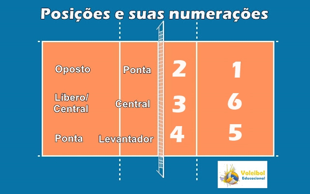
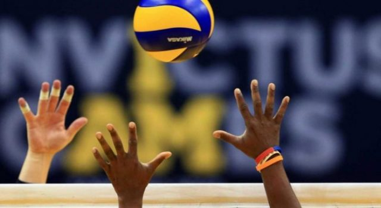
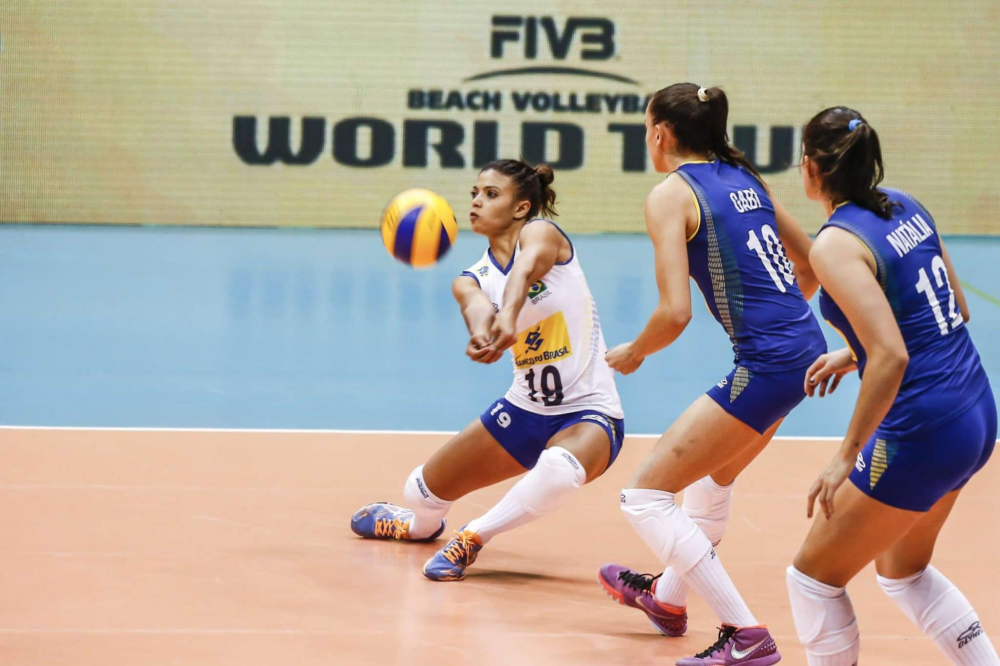
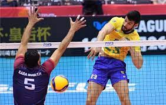
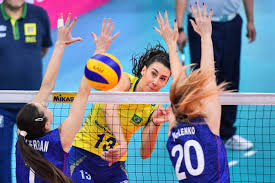
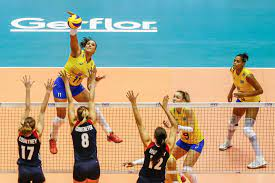
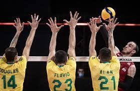
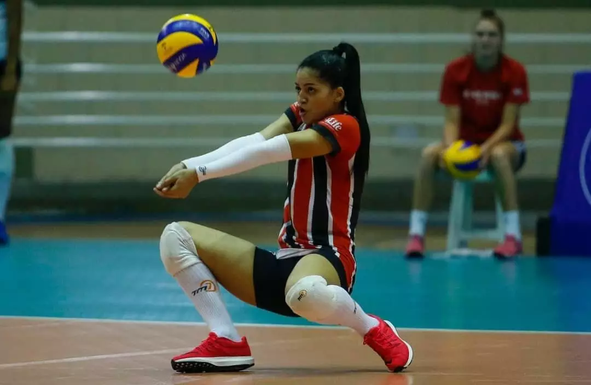

O que é o voleibol?
O volei ou voleibol é um esporte coletivo praticado em uma quadra dividida por uma rede. Duas equipes disputam a partida com o objetivo de acertar a bola no campo adversário, a qual deve ser lançada por cima da rede. Cada equipe pussui 6 titulares e 6 reservas, entram somente 6 jogadores na quadra. um lado da quadra é dividida em ataque e defesa

No volei existem 5 posições, sendo elas, ponteiros ou pontas (direita e esquerda), levantador, líbero, central e oposto. onde cada um tem sua própria posição em quadra, e suas respectivas funções.
Os jogadores chamados de pontas ou que também podem ser chamados de ponteiros, ficam dos lados laterais da quadra, um oposto do outro, eles tem a função de atacar pela a entrada e saída da rede, é também tem a função de defender o ataque do time adversário. Eles também auxiliam o time, principalmente o líbero. O ponteiro direito ocupa a posição 1 e o esquerdo a posição 4. um ocupa o lado da defesa da quadra e o outro o ataque.
O levantador é aquele jogador responsável por armar os ataque, ou seja, ele é responsavel por passar a bola para aquele do seu lado para atacar, além que ele também bloqueia, normalmente e o jogador mais alto da equipe e muitas vezes é o lider do time. Ele atua na posição 3 na quadra, na aréa de atque.

O líbero é conhecido como o central do lado de trás da quadra, ele é o principal responsavel pela a defesa e a recepção da bola, quem esta nessa posição nunca ataca, pois a sua função é defender e tentar inpedir a bola de tocar no chão, ele ocupa a posição e numero 6 na quadra, ele fica atrás do central.
Ele ataca por meio da rede, bloqueia, e ataca, ocupa a posição numero 2 na quadra, fica do lado direito do levantador.
O oposto é um dos responsáveis pelo o ataque, ele que finaliza é pega as bolas mais dificeís, sempre atacando antes da linha dos 3, sua posição é atrás do ponteiro esquerdo é ele ocupa a posição de núumero 5 na quadra, sempre na defesa, normalmente ele afetua quase tudo em quadra, somente o passe que não.
No volei existem 5 fundamentos,O saque, ataque, bloqueio, levantamento e recepção. cada fundamento tem uma função essencial na quadra.
o saque é considerado o primeiro ataque do jogo, pois é com ele que se inicia uma partida de voleibol, existem mis ou menos 5 saques, sendo eles só 3 oficiais. sempre saca quem esta na posição de ponteiro.
Ataque normalmente é o terceiro toque da equipe, onde um jogador pega a bola lançada ainda no ar e ataca pro time adversário, normalmente uma bola dificio pra outra equipe não conseguir péga-la.
O bloqueio funciona para tentar impedir a bola lançada pelo adversário alcançar o seu lado da quadra, ele também ajuda acertar a bola do adversário no campo, quando a bola bate em seus braços, o bloqueio é feito pelas ás 3 pessoas na frente da rede.
o levantamento funciona com um jogador vevantando a bola para que outro jogador possa ataca-lá, é um dos funamentos mais essencial no volei, é normalmente efetuada no segunfo toque de bola, pelo levantador.
A recepção é quaando um jogador na defesa consegue defender a bola do saque, a recepção da bola, normalmente onde o time pegar a dominasão da bola, a recepção acontece ou com o toque ou a manchete.
